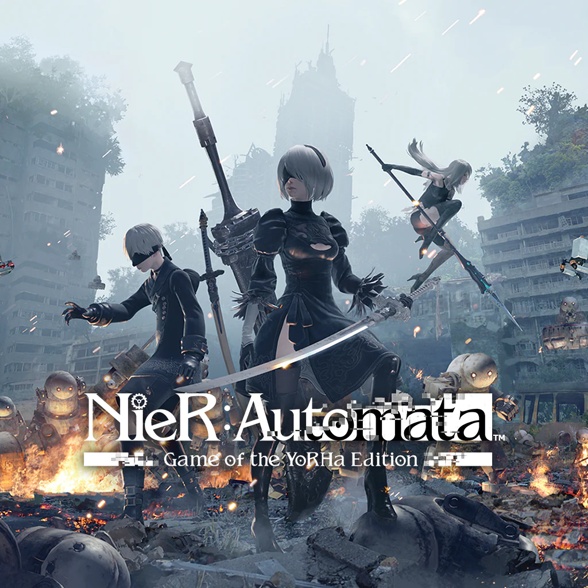
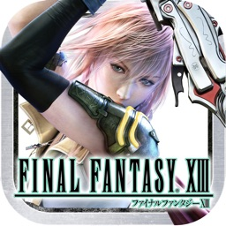
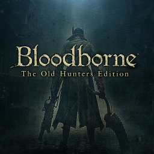
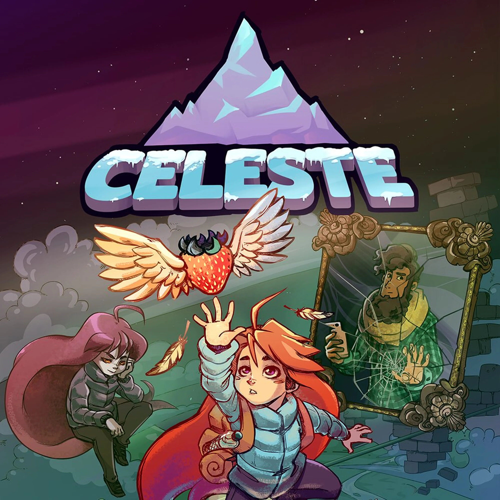
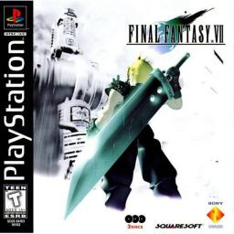
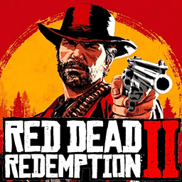
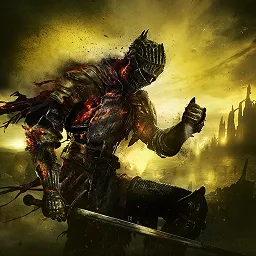
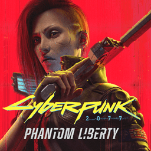
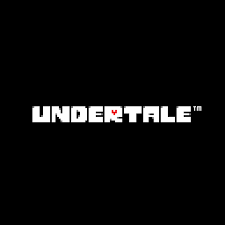
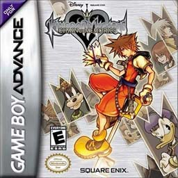

| 1 |
Nier:Automata |
NieR: Automata és un joc d'acció i rol que combina combats
frenètics, una narrativa emocionant i una banda sonora inoblidable
en un món post-apocalíptic habitat per androides i màquines.
|
 |
| 2 |
Final Fantasy XIII |
NieR: Automata és un joc d'acció i rol que combina combats
frenètics, una narrativa emocionant i una banda sonora inoblidable
en un món post-apocalíptic habitat per androides i màquines.
|
 |
| 3 |
BloodBorne |
Bloodborne és un joc d'acció i terror que t'immersa en una ciutat
gòtica infestada de horrors, on hauràs d'enfrontar-te a criatures
grotesques i desafiaments aterradora mentre descobreixes els
oscurs secrets que amaguen els seus carrers.
|
 |
| 4 |
Celeste |
Celeste és un joc de plataformes que et porta en un viatge
emocional amb Madeline, una jove determinada a superar els seus
propis límits mentals i físics mentre escalada la muntanya
Celeste.
|
 |
| 5 |
Final Fantasy VII |
Final Fantasy VII és un joc de rol clàssic que segueix la història
de Cloud Strife, un exsoldat que s'uneix a un grup de rebels per
lluitar contra una corporació corrupta que amenaça el món amb la
seva avarícia i destrucció.
|
 |
| 6 |
Red Dead Redemption 2 |
Red Dead Redemption 2 és un joc d'aventures en un món obert situat
en l'esperó final de l'oest americà, on seguiràs la història de
l'exbandido Arthur Morgan i la seva banda mentre busquen la
supervivència i la redempció en un món cada cop més modernitzat i
hostil.
|
 |
| 7 |
Dark Souls III |
Dark Souls 3 és un joc d'acció desafiador on enfrontes enemics
temibles i descobreixes secrets en un món misteriós.
|
 |
| 8 |
Cyberpunk 2077 |
Cyberpunk 2077 és un videojoc d'aventures d'acció ambientat en un
futur distòpic on explores la ciutat de Night City, un món vibrant
i caòtic ple de personatges fascinants i tecnologia avançada.
|
 |
| 9 |
Undertale |
Undertale és un videojoc indie de rol desenvolupat per Toby Fox.
Destaca per la seva narrativa única, la qual permet als jugadors
interactuar amb els personatges i el món de maneres inesperades, i
per la seva banda sonora aclamada per la crítica.
|
 |
| 10 |
Kingdom Hearts |
Kingdom Hearts és una saga de videojocs de rol d'acció
desenvolupada per Square Enix i Disney. Combina personatges i mons
de Disney amb els de Final Fantasy en una història que gira entorn
de la lluita entre la llum i la foscor.
|
 |